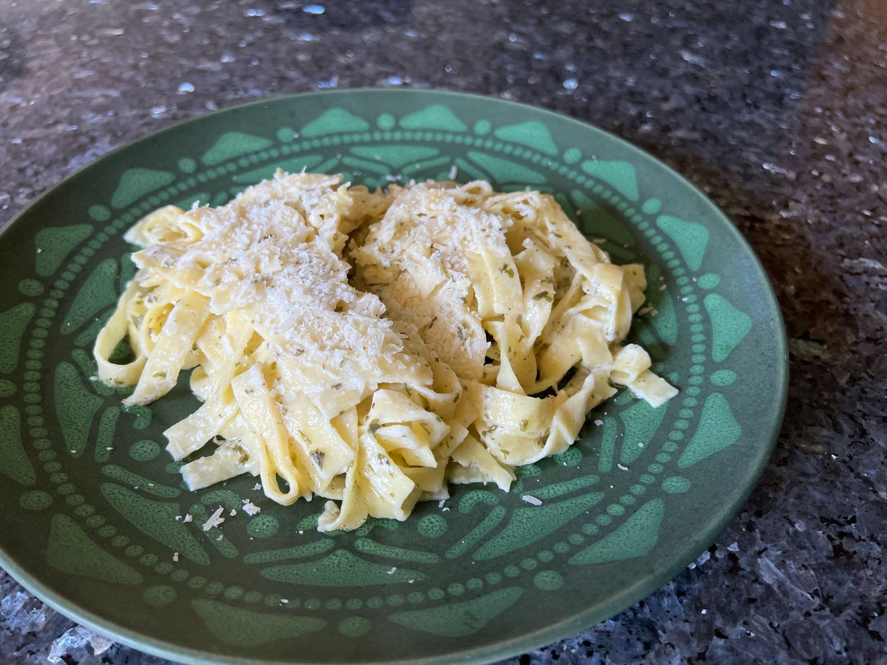

(Click the image to go back to homepage)

Alfredo... My Way
This recipe blends together elements from both authentic alfredo recipes and not-so-authentic recipes,
which results in a simple but elegantly tasty dish.
Ingredients
- Heavy Whipped Cream 400ml
- Butter 7tbsp
- Parmigiano Reggiano (GRATE YOURSELF!!!) 1/2 block NOTE: You should grate cheese yourself, if you can, because pre-grated cheeses contain cellulose and anti-caking agents, making cheese more difficult to melt, and can cause splitting sauce.
Steps
- Grate your cheese beforehand, right before you start the rest of the recipe, for best freshness & results.
- Start with boiling the pasta, following the instructions found on the packaging.